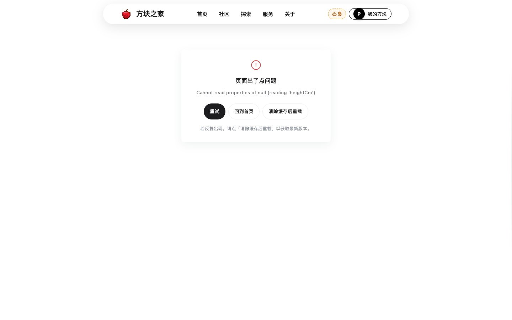
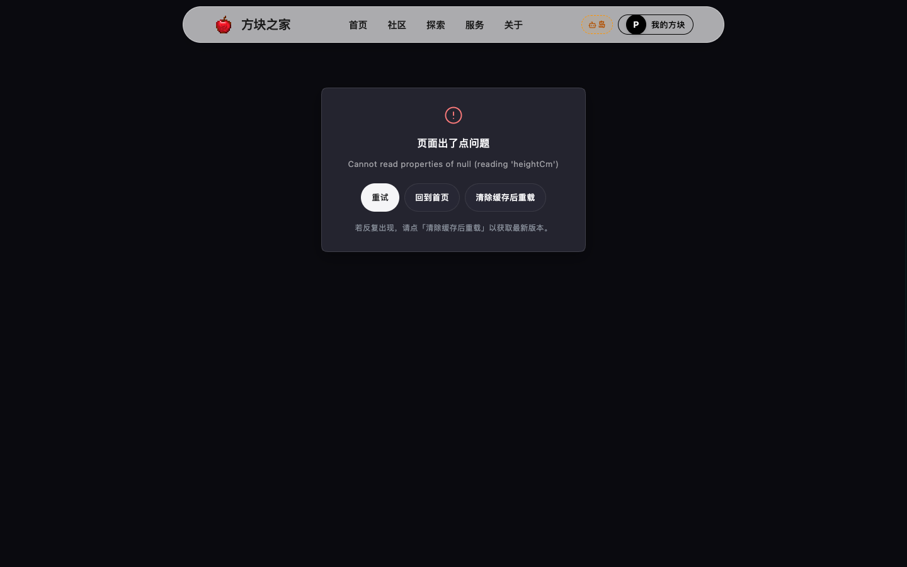
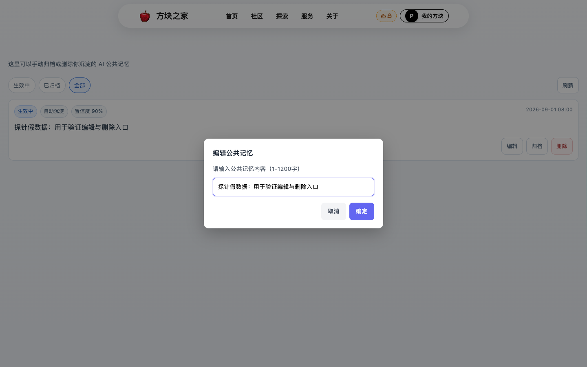
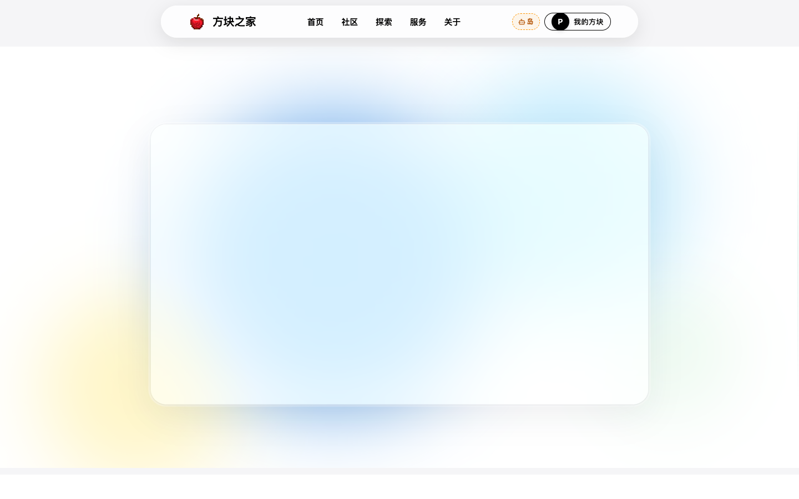

对应 output/release-assessment-20260915.txt（V2 更正版）的 T0-1 与 T1-1
修复 + 验证完成于 2026-09-16 · 改动文件 2 个 · 新增文件 4 个
| 状态 | 已修复 |
|---|---|
| 落点 | src/views/user-center/SharedMemoryManagement.vue |
| 根因 | 全文件既无 useConfirmDialog 导入也无实例，却在 :324 / :378 调用 dialog.prompt / dialog.confirm → 点击同步抛 ReferenceError，UI 完全无反应 |
| 改动 |
① 补导入 + const dialog = useConfirmDialog()；② 新增 isDialogBusy + safePrompt / safeConfirm：只吞「弹窗已被占用」这一类预期拒绝，其余 throw err 原样冒泡；③ 三处写操作（改状态 / 改内容 / 删除）的 await 全部包 try / catch(err→{ok:false}) / finally(复位 runningAction) —— 接口「抛异常」而非返回 ok:false 时也能回滚乐观值；④ 三处裸 setTimeout 收敛为 scheduleRefresh() + refreshTimer 句柄，onUnmounted 一并清理
|
| 状态 | 已修复 |
|---|---|
| 落点 | src/components/GlobalErrorBoundary.vue（新建） src/App.vue |
| 根因 | App.vue 的 <Suspense> 内 RouterView 外侧没有任何边界；ErrorBoundary.vue 只存在于 views/Lab/components/，全仓唯一导入点是 Lab 页 → 其余 44 条路由裸跑。渲染期抛错后组件树已崩，而 main.js:281 的 errorHandler 只负责记录、界面不会自愈 → 用户只见白屏 |
| 改动 |
① 新建全局边界，App.vue 中包住整个 <Suspense>（必须在 Suspense 外，放里面捕获不到异步 chunk 失败）；② 三个出口：重试 / 回到首页 / 清除缓存后重载（复用 version-checker.js 的 forceCleanAndReload，动态 import 以免在出错路径上再增加加载失败面）；③ watch(route.fullPath) 自增 boundaryKey → 换路由自动复位，一次崩溃不污染后续页面
|
--card / --foreground / --radius-sm），
其中 --radius-sm 全站根本没有定义 —— 直接搬进全局会静默裸奔（圆角归零、背景透明），
而且搬走会连累 Lab 自己。因此新建的全局版只用全局单一源 --liquid-*，
暗色由 token 自动翻转，不认任何宿主 class；Lab 版保持原样不动。
两份并存是已知的重复，收敛留到后续（不在放行门槛内）。
三层验证：单元层锁契约与错误分支，探针层验用户可见行为与计算样式，反证层验「测试本身有效」。
| 层次 | 内容 | 结果 |
|---|---|---|
| 单元 27 项 | tests/unit/global-error-boundary.test.js(14) + tests/unit/shared-memory-dialog.test.js(13)断言：边界在 Suspense 外、三出口存在、只消费 --liquid-*、暗色走 data-theme、safe 封装只吞互斥、三处 finally 复位、句柄化清理 |
全通过 |
| 端到端 35 项 | scripts/probes/probe-release-p0-fixes.mjs（从仓库根执行）A 组 17 项：真实崩溃 → 边界渲染 + 材质/圆角/几何 + 三出口 + 暗色翻转 + 换路由复位 B 组 18 项：弹窗真实弹出（含预填与材质）+ 失败回滚 + 编辑/删除各成功执行一次 |
35 / 0 |
| 反证 | git stash src/App.vue → A1 / A2 / A4 / A17 转红（A2 即白屏）删掉 const dialog → B5 / B7 / B8 转红（弹窗完全不出现） |
已转红 |
// 探针在 addInitScript 里写入畸形的持久化数据
localStorage['boh_health_persist'] = { profile: null, vaultRecords: null, ... }
// → 打开 /#/health，模板读取已持久化的空 profile
// → TypeError: Cannot read properties of null (reading 'heightCm')
// 这条路径同时实证了两个隐患的交叉：
// S11 健康数据用固定 key 持久化且登出不清
// S16 模板深层解引用无兜底




catch { return null } 会把编程错误一起吞掉，用户仍只见「点了没反应」且监控收不到；已改为按错误特征分流，其余 throw err。Content-Range 不在 CORS 安全列表里，
跨域下浏览器不会把它交给脚本，supabase-js 的 count 恒为 null，
delete({ count:'exact' }) 就被判成「不存在或无权限」而回滚。
更阴的是 page.on('response') 在 CDP 层看得到该头，日志一片正常。
修法是 mock 里加 Access-Control-Expose-Headers: Content-Range。
| 检查项 | 结果 | 说明 |
|---|---|---|
| eslint（改动文件） | 0 error | 2 个 warning 为既有未使用变量，非本次引入 |
| vue-tsc 类型检查 | 通过 | 5s，无输出即无错误 |
| vitest 全量 | 1737 passed | 107 文件 / 1 skipped（基线 105 文件 1710 项，本次新增 2 文件 27 项） |
| check:views | 通过 | 无 .vue 与同名目录冲突 |
| check:structure | 通过 | 仅既有超大文件告警 |
| check:liquid-glass | 通过 | 新组件挂现成 .liquid-glass，未裸写滤镜 |
| check:important-budget | 1332 / 1332 | 未新增，与基线持平 |
| check:first-paint | 通过 | 骨架色值 / 位置 / 主题白名单 |
| vite build | 20.23s | PWA 预缓存 110 → 111 项（新增边界组件 chunk） |
| check:shell-precache | 9 / 9 | 应用壳预缓存覆盖完整 |
| check:bundle | PASS | dist 25224 KB · largest-js 420 KB |
| 编号 | 内容 | 为什么还没做 |
|---|---|---|
| T0-2 | 消息中心卸载竞态与重连泄漏（S2 / S3） | 本轮集中清掉「功能整体不可用」与「白屏」两条最显性项；其余属稳定性加固，需要各自的探针分别验证 |
| T0-3 | 可编辑列表改稳定 key（S4）EditDrawer:365/376 仍是 :key="idx"（已复核） | |
| T0-4 | 首屏关键路径 loading 兜底（S5） | |
| T0-5 / T0-6 | 三个 HIGH 安全项 + 验证码去留 A1 2026090911:65 anon 授权仍在（已复核） |
VITE_MONITORING_ENDPOINT 未配，边界捕获的错误目前只落本地 logger，不会上报。这是 T1-2，建议与本批的边界一起收尾。app.config.errorHandler 后，仍未捕获到事件处理器里 rejected Promise 的错误对象。已确认「边界生效时 window 不会收到 pageerror」是正常行为，但该 rejection 的最终去向待查；不影响本轮结论（行为断言已覆盖）。